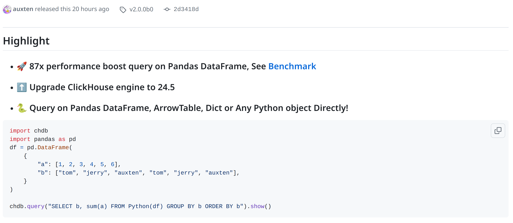

50th International Conference on Very Large Databases, Guangzhou, China - August 26-30, 2024.

Photo by Eduard Gordeev, https://www.shutterstock.com/image-photo/amsterdam-town-autumn-november-rain-1571566054
1. (50 min) What's new in ClickHouse 24.6.
2. (5 min) Guest Talks.
2. (5 min) Q&A.
ClickHouse Summer Release.
— 23 new features 🏖️
— 24 performance optimizations 🍉
— 59 bug fixes 🍦
Photo by Eduard Gordeev, https://www.shutterstock.com/image-photo/amsterdam-night-city-autumn-october-1571585038
Almost useless. But needed for completeness.
SELECT ();
CREATE TABLE test (x String) ORDER BY ();
ALTER TABLE test DETACH PARTITION ();
Demo
Developer: Amos Bird.
:) SELECT generateSnowflakeID() FROM numbers(3)
┌─generateSnowflakeID()─┐
1. │ 7201822390320365568 │
2. │ 7201822390320365569 │
3. │ 7201822390320365570 │
└───────────────────────┘
Generates a monotonic 64-bit unique identifier.
Similar to UUID, but smaller and monotonic.
Has nothing to do with Snowflake Inc.
Developer: Danila Puzov.
:) SELECT generateSnowflakeID() AS x,
snowflakeIDToDateTime(x),
snowflakeIDToDateTime64(x)
Row 1:
──────
x: 7213775618830237696
snowflakeIDToDateTime(x): 2024-07-02 07:28:52
snowflakeIDToDateTime64(x): 2024-07-02 07:28:52.999
Developer: Robert Schulze and Jasine.
:) SELECT
'🌞🏖️🍉🏊🍦⛱️🏝️🌴🌊' AS x,
base64Encode(x) AS a,
base64URLEncode(x) AS b,
base64Decode(a) AS x1,
base64URLDecode(b) AS x2 -- also, tryBase64URLDecode
Row 1:
──────
x: 🌞🏖️🍉🏊🍦⛱️🏝️🌴🌊
a: 8J+MnvCfj5bvuI/wn42J8J+PivCfjabim7HvuI/wn4+d77iP8J+MtPCfjIo=
b: 8J-MnvCfj5bvuI_wn42J8J-PivCfjabim7HvuI_wn4-d77iP8J-MtPCfjIo
x1: 🌞🏖️🍉🏊🍦⛱️🏝️🌴🌊
x2: 🌞🏖️🍉🏊🍦⛱️🏝️🌴🌊
Developer: Mikhail Gorshkov.
:) SELECT parseReadableSize('1GB'), parseReadableSize('1 GiB')
┌─parseReadableSize('1GB')─┬─parseReadableSize('1 GiB')─┐
1. │ 1000000000 │ 1073741824 │
└──────────────────────────┴────────────────────────────┘
:) SELECT parseReadableSizeOrNull(arrayJoin(['1.1 MiB', 'Hello'])) AS x
┌───────x─┐
1. │ 1153434 │
2. │ ᴺᵁᴸᴸ │
└─────────┘
The opposite of formatReadableSize.
Developer: Francisco J. Jurado Moreno.
:) WITH
'Hôtel Genève' AS a,
'Hotel Geneve' AS b
SELECT
editDistance(a, b),
editDistanceUTF8(a, b)
┌─editDistance(a, b)─┬─editDistanceUTF8(a, b)─┐
1. │ 4 │ 2 │
└────────────────────┴────────────────────────┘
Developer: Liu Neng.
:) SELECT _path, _file, _time FROM file('*', One)
┌─_path──────────────────────┬─_file──────┬───────────────_time─┐
1. │ ...release_24.6/LICENSE.md │ LICENSE.md │ 2024-05-30 15:53:13 │
2. │ ...release_24.6/index.html │ index.html │ 2024-07-02 08:07:36 │
└────────────────────────────┴────────────┴─────────────────────┘
Works for all file-like table functions: file, url, s3, hdfs, azureBlobStorage...
Developer: Ilya Golshtein.
:) SELECT toIPv4('127.0.0.1') == toIPv6('::ffff:127.0.0.1')
1
:) SELECT toIPv4('127.0.0.1') == toIPv6('::1')
0
:) SELECT toIPv4('127.0.0.1') == toIPv6('::127.0.0.1')
0
IPv4 is considered equal to the corresponding IPv6-mapped address.
Developer: Francisco J. Jurado Moreno.
:) SELECT query, used_privileges, missing_privileges FROM system.query_log
WHERE type IN ('QueryFinish', 'ExceptionBeforeStart') AND event_time >= now() - 300
Row 1:
──────
query: DESCRIBE system.query_log
used_privileges: ['SHOW COLUMNS ON system.query_log']
missing_privileges: []
Row 2:
──────
query: SELECT query, used_privileges, missing_privileges FROM system.query_log
WHERE type IN ('QueryFinish', 'ExceptionBeforeStart') AND event_time >= now() - 300
used_privileges: ['SELECT(query, used_privileges, missing_privileges, type, event_time)
ON system.query_log']
missing_privileges: []
You can paste these into a GRANT query.
Developer: Alexey Katsman.
A new server settings:
max_database_num_to_warn, max_table_num_to_warn
— a user will receive a warning in the client.
max_database_num_to_throw, max_table_num_to_throw
— a user will receive an exception on attempt to create a next
database or table over the limit.
A question: how many tables a reasonable person can have in ClickHouse?
Developer: Xu Jia.
:) SELECT table, comment FROM system.tables WHERE database = 'system'
Row 1:
──────
table: aggregate_function_combinators
comment: Contains a list of all available aggregate function combinators,
which could be applied to aggregate functions and change the way they work.
Row 2:
──────
table: asynchronous_insert_log
comment: Contains a history for all asynchronous inserts executed on
the current server.
Developer: Nikita Mikhailov.
Demo
Developer: Shaun Struwig.
The physical storage order of MergeTree tables
is defined by their ORDER BY key.
CREATE TABLE hits
(CounterID UInt32, UserID UInt64, EventTime DateTime, URL String)
ORDER BY (CounterID, UserID);
It has three purposes:
— an index for range requests (can be specified as PRIMARY KEY);
— a key for merging modes, such as Aggregating- or ReplacingMergeTree;
— a way to improve compression by co-locating data;
Can the order be automatically selected for the best compression?
Developer: Igor Markelov.
CREATE TABLE hits
(CounterID UInt32, UserID UInt64, EventTime DateTime, URL String)
ENGINE = MergeTree ORDER BY (CounterID, UserID)
SETTINGS optimize_row_order = true;
— After sorting by ORDER BY key, it will automatically sort the data
for best-effort optimal compression rate!
Demo
Developer: Igor Markelov.
Get faster INSERTs and postpone the calculation
of secondary indices until background merges:
SET materialize_skip_indexes_on_insert = 0;
SET materialize_statistics_on_insert = 0;
Useful in the presence of a large number of indices.
Does not significantly affect the performance of SELECT.
Developer: Anton Popov.
Shared storage of named collections on the cluster:
$ cat /etc/clickhouse-server/config.d/collections.yaml
named_collections_storage:
type: keeper
path: '/named_collections'
update_timeout_ms: 1000 # Optional
CREATE NAMED COLLECTION mydb AS host = 'example.test', port = 3306,
user = 'business', password = 'xyz', db = 'test';
GRANT NAMED COLLECTION ON mydb TO viewer;
SELECT * FROM system.named_collections;
SELECT * FROM mysql(mydb, table = 'mytable');
Developer: Kseniia Sumarokova
New functions: hilbertEncode, hilbertDecode.
Similar to mortonEncode, mortonDecode, but different curves.
Use when you have two similar keys, and you want to mix their order:
CREATE TABLE t (x UInt32, y UInt32, ...)
ORDER BY hilbertEncode(x, y);
Demo
Developer: Artem Mustafin
pip install chdb==2.0.0b0
Early notifications of vulnerabilities in the open-source ClickHouse distribution.
Bonus: ClickHouse, Inc. is now a CVE Numbering Authority (CNA).
Support for Metabase 0.50 and DBT 1.8.
The Spark connector is now officially supported:
https://github.com/ClickHouse/spark-clickhouse-connector.
Updates for Node.JS and Go clients,
as well as Kafka connector, Grafana, and OTEL.
+ Thanks for many fixes to our contributors:
the4thamigo-uk, gogingersnap777, andy1xx8, sylph-eu, Holi0317, dmitryax.
— How we launched ClickHouse Cloud on Azure;
— How Trip.com processes 50 PB of data in ClickHouse;
— Java Client… the SEQUEL?!;
— Building a UI for Query Insights;
— Shopee, CommonRoom, and others;
— ClickHouse OSS Trust Center;